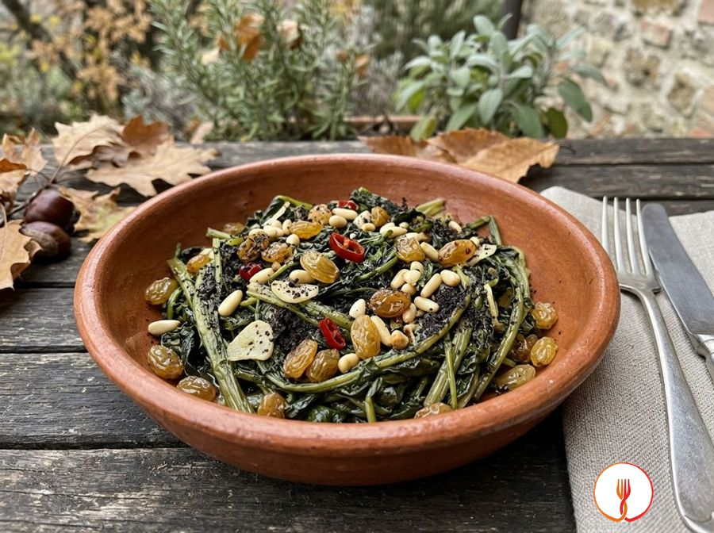

Cicoria ripassata ai pinoli, uvetta e polvere di olive nere
Un contorno autunnale che bilancia l'amaro della cicoria con la dolcezza dell'uvetta e la nota sapida della polvere di olive nere.
Ingredienti
- Cicoria di campo800 gr
- Olio extravergine d'oliva40 ml
- Aglio2 spicchi
- Uvetta sultanina30 gr
- Pinoli25 gr
- Olive nere denocciolate50 gr
- Peperoncino fresco1
- Sale finoq.b.
Allergeni
Frutta a guscio
Procedimento
- Mondare la cicoria eliminando la parte finale del gambo più coriacea e lavarla accuratamente in acqua fredda.
- Lessare la cicoria in abbondante acqua bollente salata per circa 6 minuti, mantenendola leggermente al dente.
- Scolare la verdura e immergerla immediatamente in acqua e ghiaccio per preservarne il colore verde brillante e bloccare la cottura.
- Mettere l'uvetta in ammollo in acqua tiepida per circa 15 minuti, poi strizzarla e asciugarla con cura.
- Preparare la polvere di olive: tritare molto finemente le olive nere al coltello e lasciarle asciugare su carta assorbente.
- In un padellino antiaderente, tostare i pinoli a fiamma bassa senza aggiungere grassi finché non diventano dorati.
- In una padella capiente, scaldare l'olio extravergine d'oliva con i due spicchi d'aglio schiacciati e il peperoncino a rondelle.
- Scolare bene la cicoria, strizzarla con le mani per eliminare l'eccesso di acqua e aggiungerla nella padella.
- Saltare la cicoria a fuoco vivace per 5-7 minuti, unendo a metà tempo l'uvetta strizzata e i pinoli tostati.
- Rimuovere l'aglio, disporre nei piatti da portata e completare ogni porzione con un'abbondante spolverata di polvere di olive nere.
Valori nutrizionali (stima)
| Per porzione (118 g) | Per 100 g | |
|---|---|---|
| Energia | 874 kJ / 209 kcal | 741 kJ / 177 kcal |
| Proteine | 4.5 g | 3.8 g |
| Carboidrati | 8.1 g | 6.8 g |
| di cui zuccheri | 4.9 g | 4.2 g |
| Grassi | 15 g | 13 g |
| di cui saturi | 1.8 g | 1.5 g |
| Fibre | 8.1 g | 6.9 g |
| Sale | 0.7 g | 0.6 g |
Valori stimati con l'AI su dati medi CREA / USDA: sono indicativi e non sostituiscono il parere di un medico o di un nutrizionista.
Apri la ricetta nell'app per la lista della spesa, le schede ingredienti e i negozi vicini.